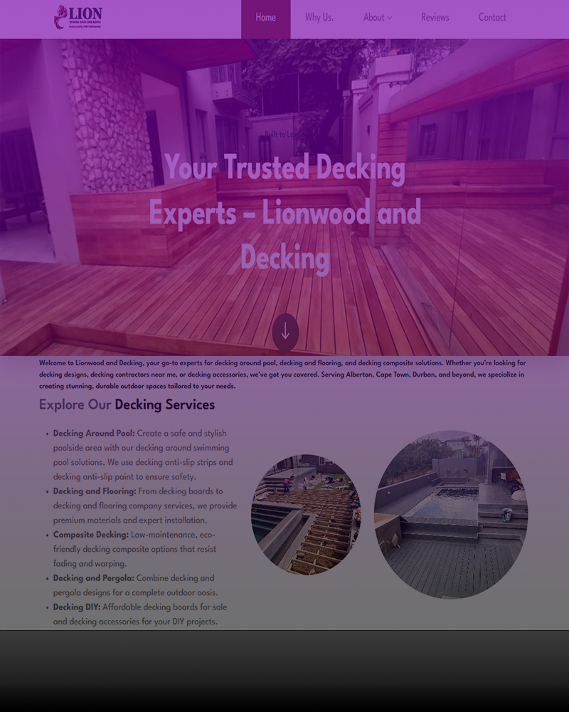
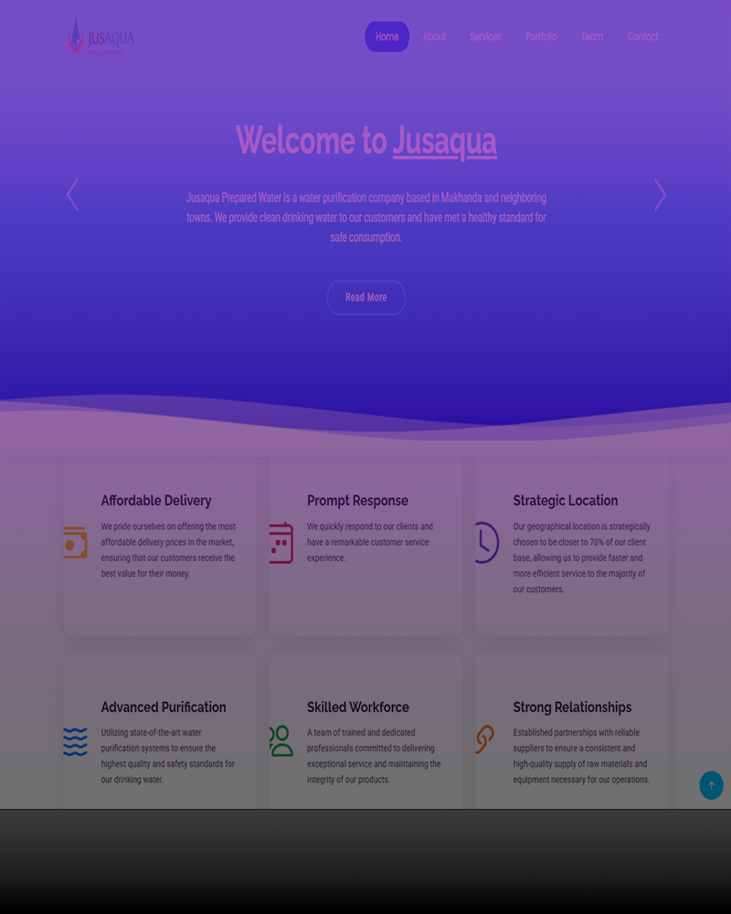
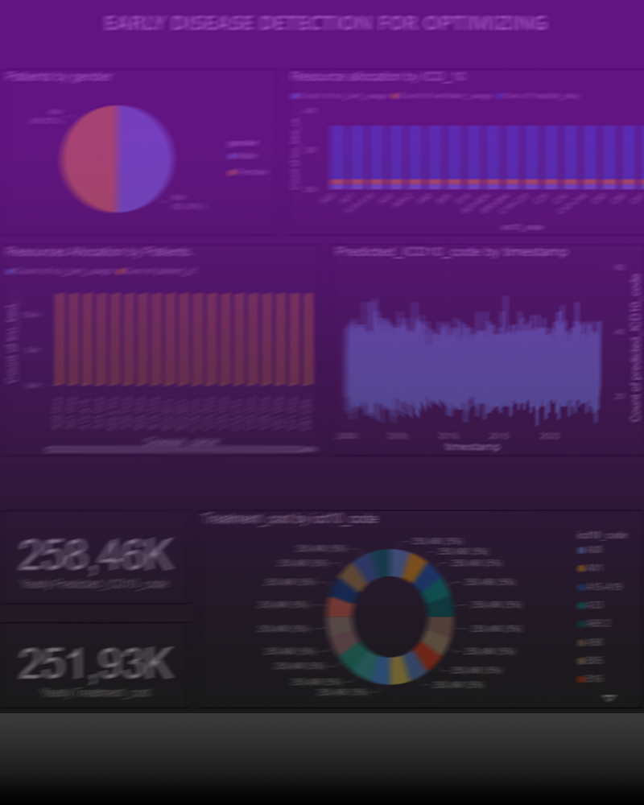
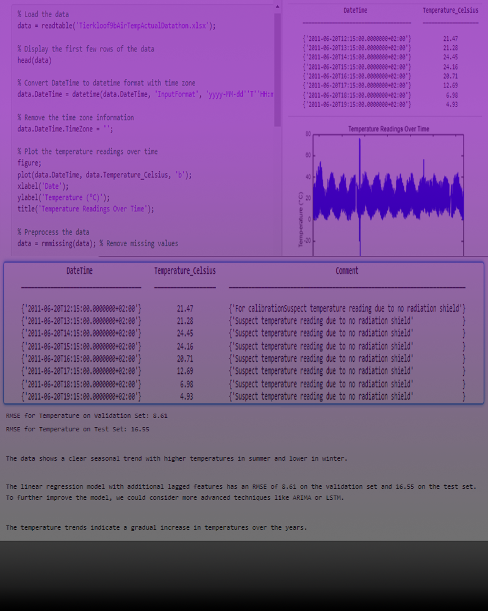
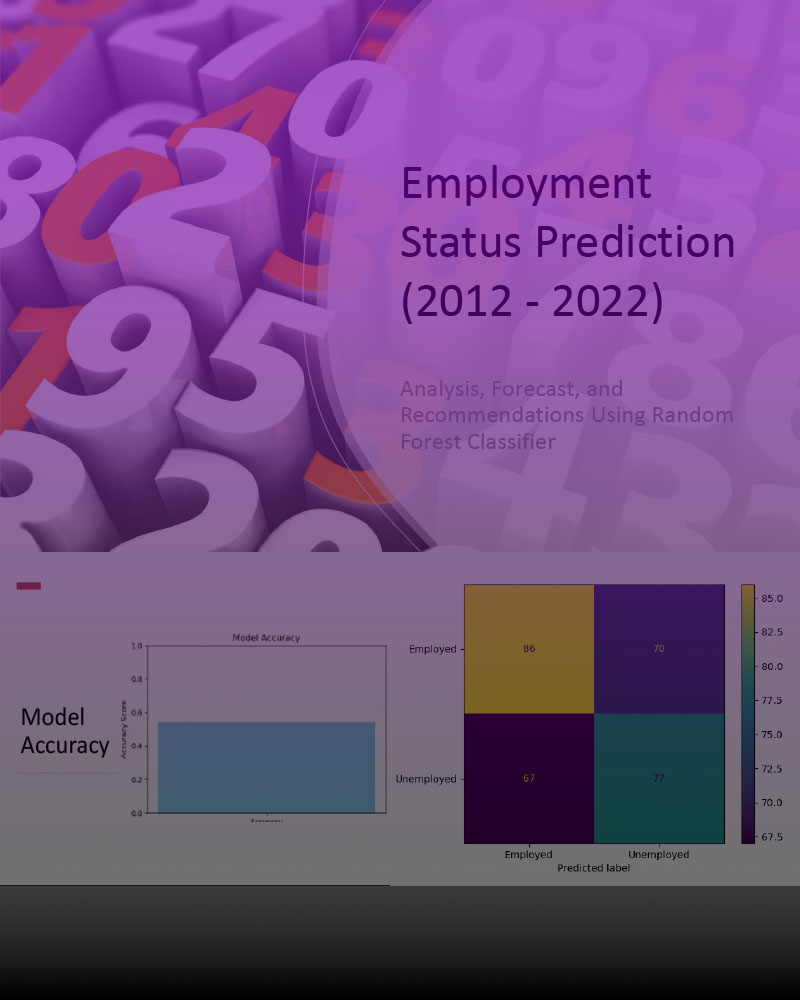
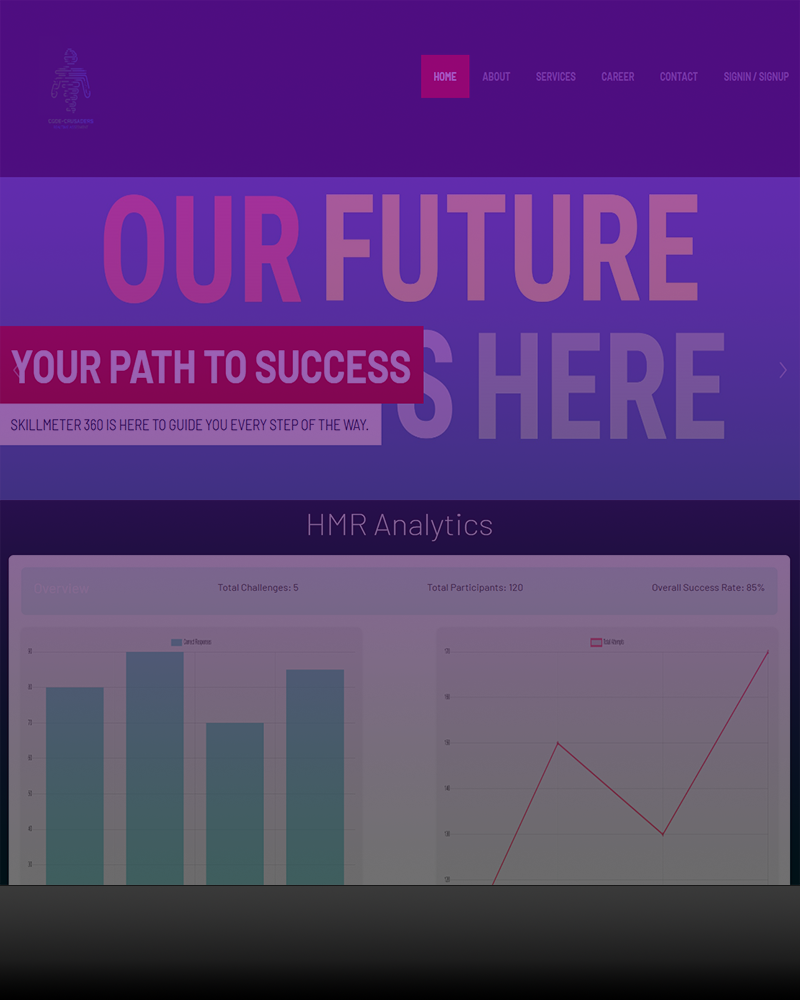
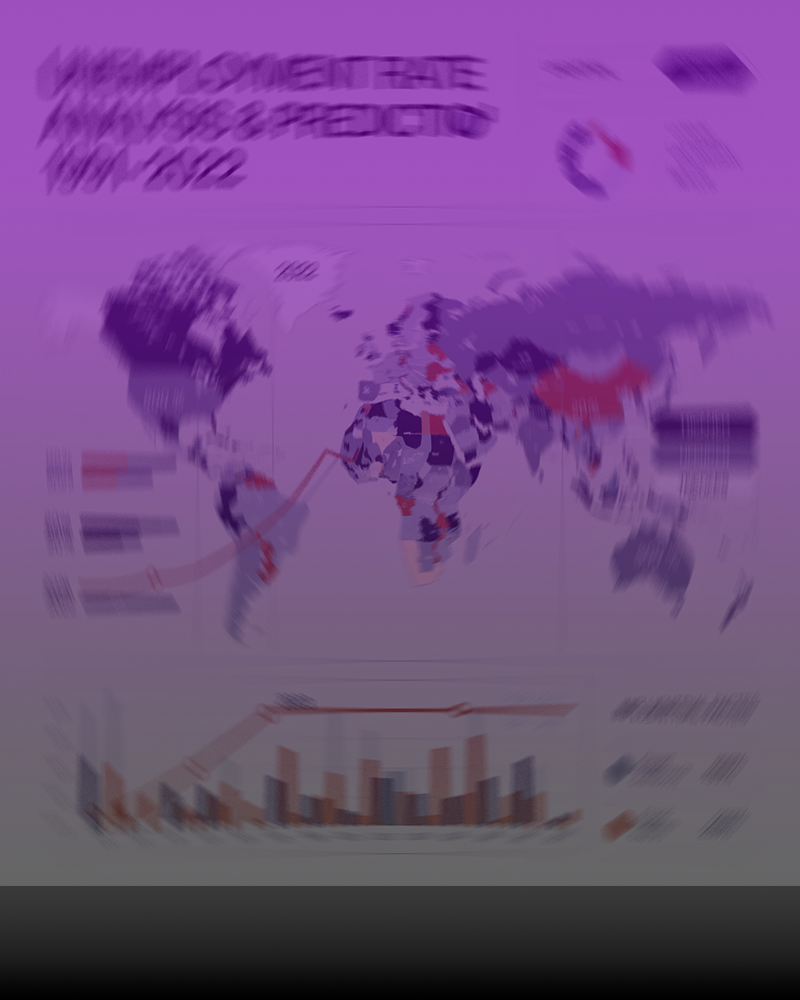
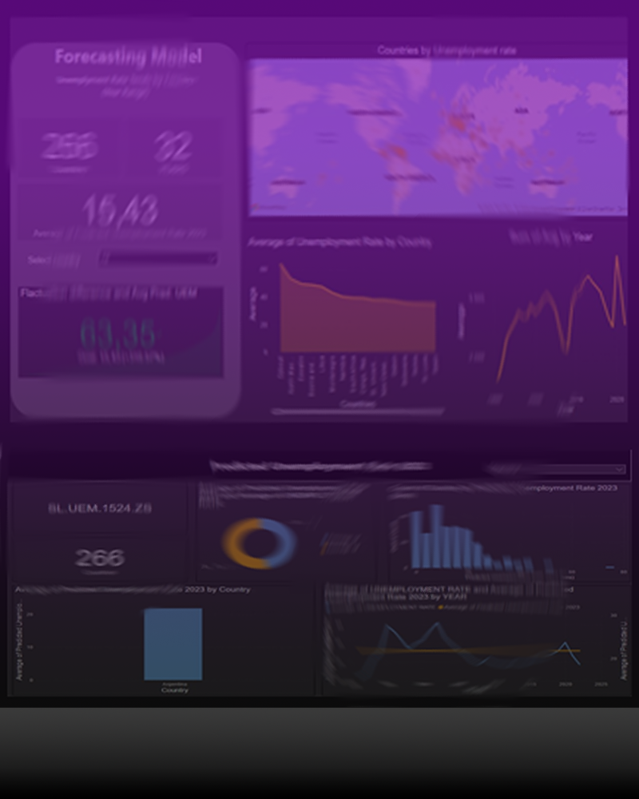
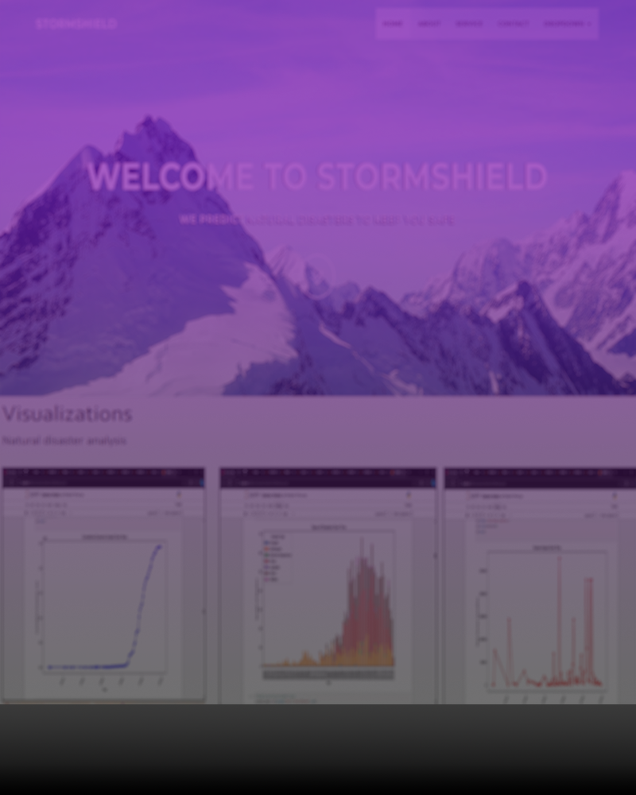

Explore my Projects

Lionwoood & Decking Lionwood | (2025)
Professional website development, featuring SEO optimization and API integration.
| Tools: | HTML, CSS, Bootstrap, JavaScript |
| API: | Calendly, Google Maps |
View Project
Full-Stack Dev
Freelance

Jusaqua Prepared Water Jusaqua | (2024)
Web Development for a water purification company based in Makhanda and neighboring towns.
✔️ Predicted disease trends using machine learning
✔️ Designed data-driven solutions to improve healthcare efficiency.
View Project
Full-Stack Dev
Freelance

Healthcare System DIRISA | (2024)
Predictive ML system for disease detection (ICD-10 codes), treatment cost estimation, and ICU/ventilator allocation in South Africa.
View Full Project Info & API Demo
Healthcare Disease & Resource ML
Healthcare Analytics & AI

S.A Temperature Analysis DIRISA | (2024)
Built machine learning models to forecast minimum and maximum temperatures for the next three days based on past climate patterns.
✔️ Conducted Exploratory Data Analysis (EDA) on climate data.
✔️ Predicted minimum and maximum temperatures for the next three days.
View Project
Climate Analytics
Data Science

Employment Status DIRISA |(2024)
Built a classification model to predict an individual’s employment status using machine learning.
✔️ Built a predictive model to classify employment status.
✔️ Provided insights into labor market trends.
View Project
Predictive Analytics
Data Science

Assessment Skill MeterTelkom | (2024)
Real-time assessment platform to bridge the skills gap by providing instant feedback, personalized learning recommendations, and progress tracking.
✔️ Assesses competencies as users engage in tasks.
✔️ Helps in identifying job-ready candidates.
View Project
AI-Based Learning
EdTech

Unemployment in Youth DIRISA | (2024)
Developed machine learning models to forecast South Africa’s youth unemployment rates.
✔️ Developed forecasting models to analyze unemployment trends.
✔️ Identified key factors influencing the job market.
View Project
Economic Modeling
Data Science

Unemployment Rate DIRISA | (2024)
Analyzed historical employment data and applied machine learning models to predict future unemployment rates.
✔️ Cleaned and preprocessed historical employment data.
✔️ Applied ML models to forecast unemployment trends.
View Project
Machine Learning
Data Science

Storm Shield IBM-Z | (2024)
Predictive ML system forecasting severe weather & analyzing water/sanitation infrastructure resilience in South Africa.
View Full Project Info & Prototype
Storm Shield (IBM ML)
Climate & Water Sanitation ML